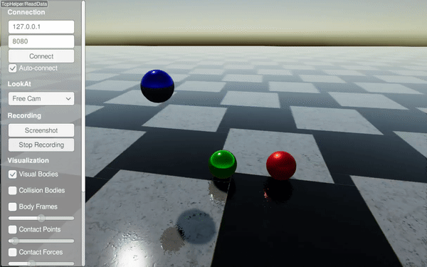

Material System
In RaiSim, material properties are defined per material pair.
RaiSim currently utilizes five material properties:
Coefficient of friction (\(\mu\ge 0\)): Defines the frictional force applied between two contacting materials.
Coefficient of restitution (\(c_r\ge 0\)): Determines the elasticity of the material pair.
Restitution threshold (\(r_{th}\ge 0\)): Objects will not rebound if the impact velocity falls below this threshold.
Coefficient of static friction (\(\mu_{s}\ge \mu\)): When specified, this defines the frictional force applied during near-zero relative velocity between contact points. By default, it equals the coefficient of friction.
Velocity threshold for static friction (\(v_s \ge 0\)): Required when the coefficient of static friction is defined. If the relative velocity exceeds this value, static friction is disregarded. Otherwise, the effective coefficient of friction is interpolated between the static and dynamic coefficients.
The bounce velocity is computed as \(c_{th}(v_i-c_{th})\), where \(v_i\) represents the impact velocity. The following graphs illustrate the effects of these material properties.
Examples are available in the restitution example and the static friction example.
A material name is assigned upon creation. For instance:
auto ball = world.addSphere(1, 1, "steel");
The World instance maintains a MaterialManager that stores all material pair properties.
Undefined material pairs utilize default material properties, which can be configured via raisim::World::setDefaultMaterial.
If default properties are not explicitly set, they default to {\(\mu=0.8\), \(c_r=0\), \(c_{th}=0\)}.
Material properties for a specific pair can be defined as follows:
world.setMaterialPairProp("steel", "glass", 0.7, 0.1, 0.15);
The first two arguments specify the material names, followed by the coefficient of friction, coefficient of restitution, and restitution threshold. The order of the material names is interchangeable.
Example - Single Bodies

XML Approach
<?xml version="1.0" ?>
<raisim version="2.0.0">
<timeStep value="0.001"/>
<objects>
<ground name="ground" material="steel"/>
<sphere name="sphere_steel" mass="1" material="steel">
<dim radius="0.5"/>
<state pos="-2 0 5" quat="1 0 0 0" linVel="0 0 0" angVel="0 0 0"/>
</sphere>
<sphere name="sphere_rubber" mass="1" material="rubber">
<dim radius="0.5"/>
<state pos="0 0 5" quat="1 0 0 0" linVel="0 0 0" angVel="0 0 0"/>
</sphere>
<sphere name="sphere_copper" mass="1" material="copper">
<dim radius="0.5"/>
<state pos="2 0 5" quat="1 0 0 0" linVel="0 0 0" angVel="0 0 0"/>
</sphere>
</objects>
<material>
<default friction="0.8" restitution="0" restitution_threshold="0"/>
<pair_prop name1="steel" name2="steel" friction="0.8" restitution="0.95" restitution_threshold="0.001"/>
<pair_prop name1="steel" name2="rubber" friction="0.8" restitution="0.15" restitution_threshold="0.001"/>
<pair_prop name1="steel" name2="copper" friction="0.8" restitution="0.65" restitution_threshold="0.001"/>
</material>
<camera follow="anymal" x="1" y="1" z="1"/>
</raisim>
C++ Approach (Single Bodies)
#include "raisim/RaisimServer.hpp"
#include "raisim/World.hpp"
int main(int argc, char* argv[]) {
auto binaryPath = raisim::Path::setFromArgv(argv[0]);
raisim::World::setActivationKey(binaryPath.getDirectory() + "\\rsc\\activation.raisim");
/// Create RaiSim world
raisim::World world;
world.setTimeStep(0.001);
/// Create objects
world.addGround(0, "steel");
auto sphere1 = world.addSphere(0.5, 1.0, "steel");
auto sphere2 = world.addSphere(0.5, 1.0, "rubber");
auto sphere3 = world.addSphere(0.5, 1.0, "copper");
sphere1->setPosition(-2,0,5);
sphere2->setPosition(0,0,5);
sphere3->setPosition(2,0,5);
world.setMaterialPairProp("steel", "steel", 0.8, 0.95, 0.001);
world.setMaterialPairProp("steel", "rubber", 0.8, 0.15, 0.001);
world.setMaterialPairProp("steel", "copper", 0.8, 0.65, 0.001);
/// Launch RaiSim server
raisim::RaisimServer server(&world);
server.launchServer();
for (int i = 0; i < 10000000; i++) {
raisim::MSLEEP(1);
server.integrateWorldThreadSafe();
}
server.killServer();
}
Example - Articulated Systems
URDF Approach
Material properties can be specified within the URDF file as follows:
<!-- Foot link -->
<link name="LF_FOOT">
<collision>
<origin xyz="0 0 0.02325"/>
<geometry>
<sphere radius="0.035"/>
</geometry>
<material name="">
<contact name="ice"/>
</material>
</collision>
</link>
C++ Approach (Articulated Systems)
Alternatively, materials can be assigned dynamically:
anymal->getCollisionBody("LF_FOOT/0").setMaterial("ice");
Here, “LF_FOOT/0” refers to the first collision body of the “LF_FOOT” link.
To retrieve the name of an assigned material:
ANYmal->getCollisionBody("LF_FOOT/0").getMaterial();
To obtain contact properties for a collision between two materials:
world.getMaterialPairProp(ANYmal->getCollisionBody("LF_FOOT/0").getMaterial(),
ground->getCollisionObject().getMaterial());
API
Material Pair Properties
-
struct MaterialPairProperties
Public Members
-
double c_f
Coefficient of friction.
-
double c_r
Coefficient of restitution.
-
double r_th
Restitution threshold velocity.
-
double c_static_f
Static friction coefficient.
-
double v_static_speed
Static friction transition speed.
-
double v_static_speed_inv
Inverse of static friction transition speed.
-
double c_f
Material Manager
-
class MaterialManager
Public Functions
-
explicit MaterialManager(const std::string &xmlFile)
upload material data from file
Public Members
-
std::unordered_map<unsigned int, MaterialPairProperties> materials_
Map from material id to properties for the default material pairing.
-
std::unordered_map<std::string, unsigned int> materialKeys_
Map from material name to material id.
-
MaterialPairProperties defaultMaterial_
Default material properties (used when no override exists).
-
unsigned int nextMaterialIdx_
Next material id to allocate.
-
explicit MaterialManager(const std::string &xmlFile)